PRODUCT AND QUOTIENT SPACES
It is the purpose of this chapter to investigate two methods of constructing new topological spaces from old. One of these involves assigning a standard sort of topology to the cartesian product of spaces, thus building a new space from those originally given. For example, the Euclidean plane is the product space of the real numbers (with the usual topology) with itself, and Euclidean n-space is the product of the real numbers n times. In chapter 4 arbitrary cartesian products of the real numbers will serve as standard spaces with which one may compare other topological spaces.
The second method of constructing a new space from a given one depends on dividing the given space X into equivalence classes, each of which is a point of the newly constructed space. Roughly speaking, we “identify” the points of certain subsets of X, so obtaining a new set of points, which is then assigned the “quotient” topology. For example, the equivalence classes of real numbers modulo the integers are assigned a topology so that the resulting space is a “copy” of the unit circle in the plane.
Both of these methods of constructing spaces are motivated by making certain functions continuous. We therefore begin by defining continuity and proving a few simple propositions about it.
CONTINUOUS FUNCTIONS
For convenience we review some of the terminology and a few elementary propositions about functions (chapter 0). The words “function,” “map,” “mapping,” “correspondence,” “operator,” and “transformation” are synonymous. A function f is said to be on X iff its domain is X. It is to Y, or into Y, iff its range is a subset of Y and it is onto Y if its range is Y. The value of f at a point x is f(x) and f(x) is also called the image under f of x. If B is a subset of Y, then the inverse under f of B, f–1[B], is {x: f(x) ε B}. The inverse under f of the intersection (union) of the members of a family of subsets of Y is the intersection (union) of the inverses of the members; that is, if Zc is a subset of Y for each member cofa set C, then 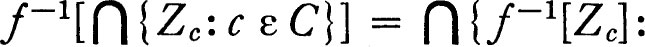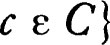 and similarly for unions. If y ε Y, then f–1[{y}], the inverse of the set whose only member is y, is abbreviated f–1[y]. The image f [A] of a subset A of X is the set of all points y such that y = f(x) for some x in A. The image of the union of a family of subsets of X is the union of the images, but, in general, the image of the intersection is not the intersection of the images. A function f is one to one iff no two distinct points have the same image, and in this case f–1 is the function inverse to f. (Notice that the notation is arranged so that, roughly speaking, square brackets occur in the designations of subsets of the range and domain of a function, and parentheses in the designation of members. For example, if f is one to one onto Y and y ε Y, then f–1(y) is the unique point x of X such that f(x) = y, and f–1[y] = {x}.)
A map f of a topological space  into a topological space
into a topological space  is continuous iff the inverse of each open set is open. More precisely, f is continuous with respect to 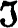 and 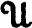, or 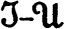 continuous, iff f–1[U] ε for each U in . The concept depends on the topology of both the range and the domain space, but we follow the usual practice of suppressing all mention of the topologies when confusion is unlikely. There are one or two propositions about continuity which are quite important, although almost self-evident. First, if f is a continuous function on X to Y and g is a continuous function on Y to Z, then the composition g ∘ f is a continuous function on X to Z, for (g ∘ f)–1[V] = f–1[g–1[V]] for each subset V of Z, and using first the continuity of g, then that of f, it follows that if V is open so is (g ∘ f)–1[V]. If f is a continuous function on X to Y, and A is a subset of X, then the restriction of f to A, f|A, is also continuous with respect to the relative topology for A, for if U is open in Y, then (f|A)–1[U] = A ∩ f–1[U] which is open in A. A function f such that f|A is continuous is continuous on A. It may happen that f is continuous on A but fails to be continuous on X.
is continuous iff the inverse of each open set is open. More precisely, f is continuous with respect to 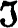 and 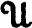, or 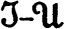 continuous, iff f–1[U] ε for each U in . The concept depends on the topology of both the range and the domain space, but we follow the usual practice of suppressing all mention of the topologies when confusion is unlikely. There are one or two propositions about continuity which are quite important, although almost self-evident. First, if f is a continuous function on X to Y and g is a continuous function on Y to Z, then the composition g ∘ f is a continuous function on X to Z, for (g ∘ f)–1[V] = f–1[g–1[V]] for each subset V of Z, and using first the continuity of g, then that of f, it follows that if V is open so is (g ∘ f)–1[V]. If f is a continuous function on X to Y, and A is a subset of X, then the restriction of f to A, f|A, is also continuous with respect to the relative topology for A, for if U is open in Y, then (f|A)–1[U] = A ∩ f–1[U] which is open in A. A function f such that f|A is continuous is continuous on A. It may happen that f is continuous on A but fails to be continuous on X.
The following is a list of conditions, each equivalent to continuity; it is useful because it is frequently necessary to prove functions continuous.
1 THEOREM If X and Y are topological space and f is a function on X to Y, then the following statements are equivalent.
(a)The function f is continuous.
(b)The inverse of each closed set is closed.
(c)The inverse of each member of a subbase for the topology for Y is open.
(d)For each x in X the inverse of every neighborhood of f(x) is a neighborhood of x.
(e)For each x in X and each neighborhood U of f(x) there is a neighborhood V of x such that f[V] ⊂ U.
(f)For each net S {or {Sn, n ε D}) in X which converges to a point s, the composition f ∘ S ({f(Sn), n ε D}) converges to f(s).
(g)For each subset A of X the image of the closure is a subset of the closure of the image; that is, f[A–] ⊂ f[A]–.
(h)For each subset B of Y, f–1[B]– ⊂ f–1[B–].
PROOF (a) ↔ (b) : This is a simple consequence of the fact that the inverse of a function preserves relative complements; that is, f–1[y ~ B] = X ~ f–1[B] for every subset B of Y.
(a) ↔ (c): If f is continuous then the inverse of a member of a subbase is open because each subbase member is open. Conversely, since each open set V in Y is the union of finite intersections of subbase members, f–1[V] is the union of finite intersections of the inverses of subbase members; if these are open, then the inverse of each open set is open.
(a) → (d) : If f is continuous, x ε X, and V is a neighborhood of f(x), then V contains an open neighborhood W of f(x) and f–1[W] is an open neighborhood of x which is a subset of f–1[V]; consequently f–1[V] is a neighborhood of x.
(d) → (e): Assuming (d), if U is a neighborhood of f(x), then f–1[U] is a neighborhood of x such that f[f–1[U] ⊂ U.
(e) → (f): Assuming (e), let S be a net in X which converges to a point s. Then if U is a neighborhood of f(s) there is a neighborhood V of s such that f [V] ⊂ U, and since S is eventually in V, f ∘ S is eventually in U.
(f) → (g): Assuming (f), let A be a subset of X and s a point of the closure A. Then there is a net S in A which converges to s, and f ∘ S converges to f(s), which is therefore a member of f[A]–. Hence f[A–] ⊂ f[A]–.
(g) → (h): Assuming (g), if A = f–1[B] then f[A–] ⊂ f[A]– ⊂ B– and hence A– ⊂ f–1[B–]. That is, f–1[B]– ⊂ f–1[B–].
(h) → (b): Assuming (h), if B is a closed subset of Y, then f–1[B]– ⊂ f–1[B–] = f–1[B] and f–1[B] is therefore closed. ∎
There is also a localized form of continuity which is useful.* A function f on a topological space X to a topological space Y is continuous at a point x iff the inverse under f of each neighborhood of f(x) is a neighborhood of x. It is easy to give characterizations of the form of 3.1(e) and 3.1(f) for continuity at a point. Evidently f is continuous iff it is continuous at each point of its domain.
A homeomorphism, or topological transformation, is a continuous one-to-one map of a topological space X onto a topological space Y such that f–1 is also continuous. If there exists a homeomorphism of one space onto another, the two spaces are said to be homeomorphic and each is a homeomorph of the other. The identity map of a topological space onto itself is always a homeomorphism, and the inverse of a homeomorphism is again a homeomorphism. It is also evident that the composition of two homeomorphisms is a homeomorphism. Consequently the collection of topological spaces can be divided into equivalence classes such that each topological space is homeomorphic to every member of its equivalence class and to these spaces only. Two topological spaces are topologically equivalent iff they are homeomorphic.
Two discrete spaces, X and Y, are homeomorphic iff there is a one-to-one function on X onto Y, that is, iff X and Y have the same cardinal number. This is true because every function on a discrete space is continuous, regardless of the topology of the range space. It is also true that two indiscrete spaces (the only open sets are the space and the void set) are homeomorphic iff there is a one-to-one map of one onto the other, because each function into an indiscrete space is continuous regardless of the topology of the domain space. In general, it may be quite difficult to discover whether two topological spaces are homeomorphic. The set of all real numbers, with the usual topology, is homeomorphic to the open interval (0,1), with the relative topology, for the function whose value at a member x of (0,1) is (2x – 1)/x(x – 1) is easily proved to be a homeomorphism. However, the interval (0,1) is not homeomorphic to (0,1) ∪ (1,2), for if f were a homeomorphism (or, in fact, just a continuous function) on (0,1) with range (0,1) ∪ (1,2), then f–1[(0,1)] would be a proper open and closed subset of (0,1), and (0,1) is connected. This little demonstration was achieved by noticing that one of the spaces is connected, the other is not, and the homeomorph of a connected space is again connected. A property which when possessed by a topological space is also possessed by each homeomorph is a topological invariant. The proof that two spaces are not homeomorphic usually depends on exhibiting a topological invariant which is possessed by one but not by the other. A property which is defined in terms of the members of the space and the topology turns out, automatically, to be a topological invariant. Besides connectedness, the property of having a countable base for the topology, having a countable base for the neighborhood system of each point, being a T1 space or being a Hausdorff space, are all topological invariants. Formally, topology is the study of topological invariants.*
PRODUCT SPACES
There is a standard way of topologizing the cartesian product of a collection of topological spaces. The construction is extremely important and consequently we examine minutely the properties of the topology introduced. Let X and Y be topological spaces and let  be the family of all cartesian products U × V where U is an open subset of X and V is an open subset of Y. The intersection of two members of
be the family of all cartesian products U × V where U is an open subset of X and V is an open subset of Y. The intersection of two members of  is a member of
is a member of  , because (U × V) ∩ (R × S) = (U ∩ R) × (V ∩ S), and consequently
, because (U × V) ∩ (R × S) = (U ∩ R) × (V ∩ S), and consequently  is the base for a topology for X × Y by theorem 1.11. This topology is called the product topology for X × Y. A subset W of X × Y is open relative to the product topology if and only if for each member (x,y) of W there are open neighborhoods U of x and V of y such that U × V ⊂ W. The spaces X and Y are coordinate spaces, and the functions P0 and P1 which carry a point (x,y) of X × Y into x and into y respectively are the projections into the coordinate spaces. These projections are continuous functions, for if U is open in X, P0–1[U] is U × Y, which is open. Continuity of the projections actually serves to characterize the product topology in the following sense. Suppose is a topology for X × Y such that each of the projections is continuous. Then if U is open in X and V is open in Y the set U × V is open relative to , for U × V = P0–1[U] ∪ P1–1[V] and this set is open relative to because the projections are continuous. Consequently is larger than the product topology and the product topology is therefore the smallest topology for which the projections into coordinate spaces are continuous.
is the base for a topology for X × Y by theorem 1.11. This topology is called the product topology for X × Y. A subset W of X × Y is open relative to the product topology if and only if for each member (x,y) of W there are open neighborhoods U of x and V of y such that U × V ⊂ W. The spaces X and Y are coordinate spaces, and the functions P0 and P1 which carry a point (x,y) of X × Y into x and into y respectively are the projections into the coordinate spaces. These projections are continuous functions, for if U is open in X, P0–1[U] is U × Y, which is open. Continuity of the projections actually serves to characterize the product topology in the following sense. Suppose is a topology for X × Y such that each of the projections is continuous. Then if U is open in X and V is open in Y the set U × V is open relative to , for U × V = P0–1[U] ∪ P1–1[V] and this set is open relative to because the projections are continuous. Consequently is larger than the product topology and the product topology is therefore the smallest topology for which the projections into coordinate spaces are continuous.
There is no difficulty in extending this definition of product topology to cartesian product of any finite number of coordinate spaces. If each of X0, X1, … Xn–1 is a topological space, then a base for the product topology for X0 × X1 × ··· × Xn–1 is the family of all products U0 × U1 × ··· Un–1 where each Ui is open in Xi. In particular, if each Xi is the set of real numbers with the usual topology, then the product space is Euclidean n-space En. The members of En are real-valued functions on the set 0, 1, … n – 1, the value of the function x at the integer i being xi (= x(i)).
The product topology for the cartesian product of an arbitrary family of topological spaces will now be defined. Suppose we are given a set Xa for each member a of an index set A. The cartesian product 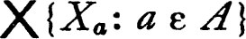 is defined to be the set of all functions x on A such that xa ε Xa for each a in A. The set Xa is the a-th coordinate set and the projection Pa of the product into the a-th coordinate set is defined by Pa(x) = xa. Suppose that a topology 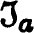 is given for each coordinate set. The construction * of the product topology is motivated by the requirement that each projection Pa is to be continuous. In order to attain continuity of the projections it is necessary and sufficient that each set of the form Pa–1[U] be open, where U is an open subset of Xa. The family of all sets of this form is a subbase for a topology; it is clearly the smallest topology such that projections are continuous. The product topology is this topology. The members of the defining subbase are of the form {x: xa ε U] where U is open in Xa; they are, intuitively, cylinders over open sets in the coordinate spaces. It is sometimes said that elements of the subbase consist of sets obtained by “restricting the a-th coordinate to lie in an open subset of the a-th coordinate space.” A base for the product topology is the family of all finite intersections of subbase elements. A member U of this base is of the form 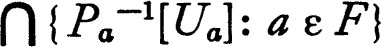 a ε F} = {x: xa ε Ua for each a in F} where F is a finite subset of A and Ua is open in Xa for each a in F. It is to be emphasized that these are finite intersections. It is not true that 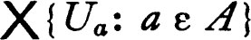 is always open relative to the product topology if Ua is open in Xa for each a. The product space is the cartesian product with the product topology.
The projections of a product space into the coordinate spaces have another very useful property. A function f on a topological space X to another space Y is open (interior) iff the image of each open set is open; that is, if U is open in X, then f[U] is open in Y.
2 THEOREM The projection of a product space into each of its coordinate spaces is open.
PROOF Let Pc be the projection of 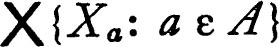 into Xc. In order to show that Pc is open it is sufficient to show that the image of a neighborhood of a point x in the product is a neighborhood of Pc(x), and it may be assumed that the neighborhood in the product space is a member of the defining base for the product topology. Suppose that x ε V = {y: ya ε Ua for a in F}, where F is a finite subset of A and Ua is open in Xa for each a in F. We construct a copy of Xc which contains the point x. For z ε Xc let f(z)c = z, and for a ≠ c let f(z)a = xa. Then Pc ∘ f(z) = z. If 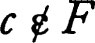, then clearly f[Xc] ⊂ V and Pc[V] = Xc which is open. If c ε F, then f(z) ε V iff z ε Uc and Pc[V] = Uc. The theorem follows. (As a matter of fact, the function f defined in this proof is a homeomorphism, a fact that is occasionally useful.) ∎
It might be conjectured that the projection of a closed set in a product space is closed. This, however, is easily seen to be false, for in the Euclidean plane the set {(x,y) : xy = 1} has a non-closed projection on each coordinate space.
There is an extremely useful characterization of continuity of a function whose range is a subset of a product space.
3 THEOREM A function f on a topological space to a product  is continuous if and only if the composition Pa ∘ f is continuous for each projection Pa.
is continuous if and only if the composition Pa ∘ f is continuous for each projection Pa.
PROOF If f is continuous, then Pa ∘ f is always continuous because Pa is continuous. If Pa ∘ f is continuous for each a, then for each open subset U of Xa the set (Pa ∘ f)–1[U] = f–1[Pa–1[U]] is open. It follows that the inverse under f of each member of the defining subbase for the product topology is open, and hence (3.1c) f is continuous. ∎
Convergence in a product space can be described very simply in terms of the projections.
4 THEOREM A net S in a product space converges to a point s if and only if its projection in each coordinate space converges to the projection of s.
PROOF Since the projection into each coordinate space is continuous, if {Sn, n ε D} is a net in the cartesian product  which converges to a point s, then the net {Pa(Sn), n ε D} surely converges to Pa(s). To show the converse, let {Sn, n ε D) be a net such that {Pa(Sn), n ε D] converges to sa for each a in A. Then for each open neighborhood Ua of sa, {Pa(Sn), n ε D} is eventually in Ua, consequently {Sn, n ε D} is eventually in Pa–1[Ua], and hence {Sn, n ε D} must eventually be in each finite intersection of sets of the form Pa–1[Ua]. Since the family of such finite intersections is a base for the neighborhood system of s in the product topology, {Sn, n ε D} converges to s. ∎
which converges to a point s, then the net {Pa(Sn), n ε D} surely converges to Pa(s). To show the converse, let {Sn, n ε D) be a net such that {Pa(Sn), n ε D] converges to sa for each a in A. Then for each open neighborhood Ua of sa, {Pa(Sn), n ε D} is eventually in Ua, consequently {Sn, n ε D} is eventually in Pa–1[Ua], and hence {Sn, n ε D} must eventually be in each finite intersection of sets of the form Pa–1[Ua]. Since the family of such finite intersections is a base for the neighborhood system of s in the product topology, {Sn, n ε D} converges to s. ∎
Convergence in the product topology is called coordinatewise convergence, or pointwise convergence. The latter term is used most frequently in the case in which all coordinate spaces are identical. In this important special case the cartesian product 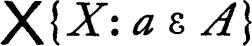 is simply the set of all functions on A to X, usually denoted XA. A net {Fn, n ε D} in XA converges to f in the topology of pointwise convergence iff the net {Fn(a), n ε D} converges to f(a) for each a in A. This fact makes the terminology, “pointwise convergence,” seem reasonable. The product topology is also called the simple topology in this case.
It is natural to ask whether the product of topological spaces inherits properties which are possessed by the coordinate spaces. For example, we might ask, in case each coordinate space is a Hausdorff space or satisfies the first or second axiom of countability, whether the product space also has these properties. The following theorems answer these questions.
5 THEOREM The product of Hausdorff spaces is a Hausdorff space.
PROOF If x and y are distinct members of the product 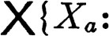 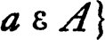, then xa ≠ ya for some a in A. If each coordinate space is Hausdorff, then there are disjoint open neighborhoods U and V of xa and ya respectively and Pa–1[U] and Pa–1[V] are disjoint neighborhoods of x and y in the product. ∎
Recall that an indiscrete topological space is one in which the only open sets are the void set and the space.
6 THEOREM Let Xa be a topological space satisfying the first axiom of countability for each member a of an index set A. Then the product  satisfies the first axiom of countability if and only if all but a countable number of the spaces Xa are indiscrete.
satisfies the first axiom of countability if and only if all but a countable number of the spaces Xa are indiscrete.
PROOF Suppose that B is a countable subset of A, that Xa is indiscrete for a in A ~ B, and that x is a point in the product space. For each a in A choose a countable base 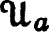 for the neighborhood system of xa in Xa. Then 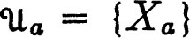 if a is in A ~ B. Consider the family of all finite intersections of sets of the form Pa–1 [U] for a in A and U in . This is a countable family because 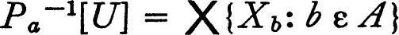 if a ε A ~ B. But the family of these finite intersections is a base for the neighborhood system of x and consequently the product space satisfies the first axiom of countability.
To prove the converse suppose that B is an uncountable subset of A such that for each a in B there is a neighborhood of xa in Xa which is a proper subset of Xa, and suppose that there is a countable base for the neighborhood system of x. Each member U of contains a member of the defining base for the product topology, and consequently, except for a finite number of members a of A, Pa[U] = Xa. Since B is uncountable, there is a member a of B such that Pa[U] = Xa for every U in . But there is an open neighborhood V of xa which is a proper subset of Xa, and clearly no member of is a subset of Pa–1[V] since each member of projects onto Xa. This is a contradiction. ∎
It is also true that the coordinate spaces inherit certain properties of a product space. If a product space is Hausdorff, so is each coordinate space, and if the product space has a countable local base at each point, then so does each coordinate space. These propositions are easy to establish, and the proofs are omitted.
7 Notes Tychonoff defined the product topology and proved the most important properties in two classic papers (Tychonoff [1] and [2]). His results are now among the standard tools of general topology. (See also chapter 5.) Prior to Tychonoff’s work a great deal of investigation had been done on the convergence of sequences of functions relative to the topology of pointwise convergence. Many difficulties occur in this work because the topology cannot be completely described by sequential convergence, at least in the most interesting cases. (See problem 3.W.)
We begin by reviewing briefly the considerations which led to the definition of the product topology. If f is a function on a set X with values in a topological space Y, then it is always possible to assign a topology to X such that f is a continuous function. One obvious and uninteresting topology which has this property is the discrete topology; a more interesting topology is the family of all sets of the form f–1[U] for U open in Y. This family is evidently a topology because the inverse of a function preserves unions. Each topology, relative to which f is continuous, contains and consequently is the smallest topology for which f is continuous. If we are given a family of functions, a function fa for each member a of an index set A, then the topology, a subbase for which is the family of all sets of the form fa–1[U] for a in A and U open in the range of fa, has precisely the same properties. This is the method by which the product topology was defined.
It is the purpose of this section to investigate the reciprocal situation. If f is a function on a topological space X with range Y, how may Y be topologized so that f is continuous? If a subset U of Y is open in a topology relative to which f is continuous, then f–1[U] is open in X. On the other hand, the family of all subsets U such that f–1[U] is open in X is a topology for Y because the inverse of an intersection (or union) of members of the family is the intersection (union) of the inverses. The topology is therefore the largest topology for Y such that the function f is continuous; it is called the quotient topology for Y (the quotient topology relative to f and the topology of X). A subset B of Y is closed relative to the quotient topology iff f–1[Y ~ B] = X ~ f–1[B] is open in X. Hence B is closed iff f–1[B] is closed.
Without some severe limitation on f very little can be said about the quotient topology. Consequently we consider only functions belonging to one of two dual categories. Recall that f, a function on a topological space with values in another space, is open iff the image of each open set is open. A function f is said to be closed iff the image of each closed set is closed. It has already been observed that projection of the Euclidean plane onto its first coordinate space is an open map which is not closed, and subspaces of the plane give examples of maps which are closed but not open, and maps which are neither open nor closed. The subspace X = {(x,y): x = 0 or y = 0}, consisting of the two axes, is mapped onto the reals by the projection P(x,y) = x. The image of a small neighborhood of (0,1) is mapped into the single point 0. Consequently P is not an open map on X, but it is easy to verify that it is closed. If (0,0) is removed, leaving X ~ {(0,0)}, then P on this subspace is neither open nor closed (the image of the closed set {(x,y): y = 0 and x ≠ 0} is not closed).
It is apparent from the definition that the notion of an open or a closed map depends on the topology of the range space. However, if a map f is continuous and either open or closed, then the topology of the range is entirely determined by the map f and the topology of the domain.
8 THEOREM If f is a continuous map of the topological space 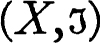 onto the space 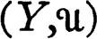 such that f is either open or closed, then is the quotient topology.
PROOF If f is an open map and U is a subset of Y such that f–1[U] is open, then U = f[f–1[U]] is open relative to . Consequently, if f is open, each set open relative to the quotient topology is open relative to , and the quotient topology is smaller than . If f is continuous as well as open, then since the quotient topology is the largest for which f is continuous, is the quotient topology. To prove the theorem for a closed function f it is only necessary to replace “open” by “closed” in each of the preceding statements. ∎
If f is a function on a topological space to a product space, then f is continuous iff the composition of f with each projection is continuous. There is an analogue of this proposition for quotient spaces.
9 THEOREM Let f be a continuous map of a space X onto a space Y and let Y have the quotient topology. Then a function g on Y to a topological space Z is continuous if and only if the composition g ∘ f is continuous.
PROOF If U is open in Z and g ∘ f is continuous, then (g ∘ f)–1[U] = f–1[g–1 [U]], which is open in X, and g–1[U] is therefore open in Y by the definition of the quotient topology. The converse is clear. ∎
It is almost evident that the quotient topology and the properties of open or closed maps have little to do with the range space. In fact, if f is a continuous map of a topological space X onto a space Y with the quotient topology, then a topological copy of Y may be reconstructed from X, its topology, and the family of all sets of the form f–1[y] for y in Y. The construction goes as follows. Let 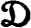 be the family of all subsets of X of the form f–1[y] for y in Y, and let P be the function on X to whose value at x is f–1[f(x)]. For each member y of Y let g(y) = f–1[y], so that g is a one-to-one map of Y onto . Then g ∘ f = P, and f = g–1 ∘ P. If is assigned the quotient topology (relative to P) the preceding theorem 3.9 shows the continuity of g (since g ∘ f = P) and the continuity of g–1 (since g–1 ∘ P = f). Consequently g is a homeomorphism.
The preceding remarks show that the range space is essentially extraneous to the discussion, and the remaining theorems of the section will be formulated so as to display this fact. As a preliminary we consider briefly the families of subsets of a fixed set X. A decomposition (partition) of X is a disjoint family of subsets of X whose union is X. The projection (quotient map) of X onto the decomposition is the function P whose value at x is the unique member of to which x belongs. There is an equivalent way of describing a decomposition. Given , define a relation R on X by agreeing that a point x is R related to a pointy iff x and y belong to the same member of the decomposition. Formally, the relation R of the decomposition is the subset of X × X consisting of all pairs (x,y) such that x and y belong to the same member of , or, briefly, 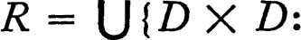 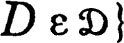. If P is the projection of X onto , then R = {(x,y): P(x) = P(y)}. The relation R is an equivalence relation: that is, it is reflexive, symmetric, and transitive (see chapter 0). Reciprocally, each equivalence relation on X defines a family of subsets (the equivalence classes) which is a decomposition of X. If R is an equivalence relation on X, then X/R is defined to be the family of equivalence classes. If A is a subset of X, then R[A] is the set of all points which are R relatives of points of A; that is, R[A] = {y: (x,y) ε R for some x in A}. Equivalently, 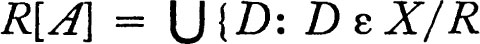 and D ∩ A is non-void}. If x is a point of X, then we abbreviate R[{x}] as R[x]. The set R[x] is the equivalence class to which x belongs, and if P is the projection of X onto the decomposition, then P(x) = R[x].
We assume for the rest of the section that X is a fixed topological space, R is an equivalence relation on X, and that P is the projection of X onto the family X/R of equivalence classes. The quotient space is the family X/R with the quotient topology (relative to P). If 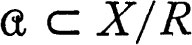, then 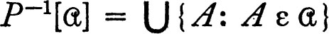 and hence 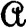 is open (closed) relative to the quotient topology iff 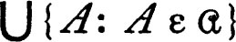 is open (respectively closed) in X.
10 THEOREM Let P be the projection of the topological space X onto the quotient space X/R. Then the following statements are equivalent.
(a)P is an open mapping.
(b)If A is an open subset of X, then R[A] is open.
(c)If A is a closed subset of X, then the union of all members of X/R which are subsets of A is closed.
If “open” and “closed” are interchanged in (a), (b), and (c) the resulting statements are equivalent.
PROOF It is first shown that (a) is equivalent to (b). For each subset A of X, the set R[A] = P–1[P[A]]. If P is open and A is open, then, since P is continuous, P–1[P[A]] is open. If P–1[P[A]] is open for each open set A, then, since by the definition of the quotient topology P[A] is open, P is an open mapping. To prove (b) equivalent to (c) notice that the union of all members of X/R which are subsets of A is X ~ R[X ~ A], and this set is closed for each closed A iff R[X ~ A] is open whenever X ~ A is open. A proof of the dual proposition is obtained by interchanging “open” and “closed” throughout. ∎
If X is a Hausdorff space or satisfies one of the axioms of countability it is natural to ask whether the quotient space X/R necessarily inherits these properties. Without some drastic restriction the answer is “no.” For example, if X is the set of real numbers with the usual topology and R is the set of pairs (x,y) such that x – y is rational, then the quotient space X/R is indiscrete, and the projection P of X onto X/R is open. Consequently an open map may carry a Hausdorff space into a non-Hausdorff space. An example of a closed map which carries a Hausdorff space onto a non-Hausdorff space or carries a space satisfying the first axiom of countability onto a space which fails to satisfy the axiom, is slightly more complex but not difficult. (3.R, 4.G.) There is an additional hypothesis which is sometimes useful. It is sometimes assumed that R, which is a set of ordered pairs, is closed in the product space X × X. This condition may be restated: if x and y are members of X which are not R related, then there is a neighborhood W of (x,y) in the product space X × X which is disjoint from R. Such a neighborhood W contains a neighborhood of the form U × V, where U and V are neighborhoods of x and y respectively, and U × V is disjoint from R iff there is no point of U which is R related to a point of V. That is, R is closed in X × X iff, whenever x and y are points of X which are not R related, then there are neighborhoods U and V of x and y respectively such that no point of U is R related to a point of V. Equivalently, no member of X/R intersects both U and V.
11 THEOREM If the quotient space X/R is Hausdorff, then R is closed in the product space X × X.
If the projection P of a space X onto the quotient space X/R is open, and R is closed in X × X, then X/R is a Hausdorff space.
PROOF If X/R is a Hausdorff space and 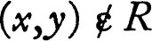, then P(x) ≠ P(y) and there are disjoint open neighborhoods U of P(x) and V of P(y). The sets P–1[U] and P–1[V] are open, and since their images under P are disjoint, no point of P–1[U] is R related to a point of P–1[V]. Therefore P–1[U] × P–1[V] is a neighborhood of (x,y) which is disjoint from R, and R is closed. The first statement of the theorem is proved. Suppose now that P is open, R is closed in X × X, and P(x) and P(y) are distinct members of X/R. Then x is not R related to y and, since R is closed, there are open neighborhoods U and V of x and y respectively such that no point of U is R related to a point of V. Hence the images of U and V are disjoint, and since P is open they are open neighborhoods of P(x) and P(y) respectively. ∎
Closed maps have been studied rather extensively under a different name. A decomposition of a topological space X is upper semi-continuous iff for each D in and each open set U containing D there is an open set V such that D ⊂ V ⊂ U and V is the union of members of . (See problem 3.F for the origin of the term “upper semi-continuous.”)
12 THEOREM A decomposition of a topological space X is upper semi-continuous if and only if the projection P of X onto is closed.
PROOF According to theorem 3.10, P is a closed map iff for each open subset U of X it is true that the union V of all members of which are subsets of U is an open set. If P is closed, 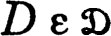 and D ⊂ U, then V is the required open set and hence is upper semi-continuous. To prove the converse suppose that is upper semi-continuous and that U is an open subset of X. Let V be the union of all members of which are subsets of U. If x ε V, then x ε D ⊂ U for some D in . Hence by upper semi-continuity there is an open set W, the union of members of , such that D ⊂ W ⊂ U. Then W is a subset of V and consequently V is a neighborhood of x. The set V is open because it is a neighborhood of each of its points, and it follows from 3.10 that P is a closed map. ∎
If A and B are disjoint closed subsets of X one may define the decomposition of X whose members are A, B, and all sets {x} for x in X ~ (A ∪ B). The quotient space of this decomposition is sometimes called “the space obtained by identifying all points of A and identifying all points of B.” It is very easy to verify that is upper semi-continuous, and if X is Hausdorff the relation 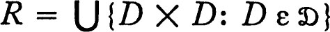 is closed in X × X One might suppose that with this simple construction the quotient space might inherit pleasant properties of the space X. Unfortunately, even in this case X may be Hausdorff or satisfy the first or second countability axiom and the corresponding proposition for the quotient space be false.
13 Note The notion of upper semi-continuous collection was introduced by R. L. Moore in the late twenties; open mappings were first studied intensively by Aronszajn a little later (Aronszajn [2]). Many of the results of the preceding section will be found in Whyburn [2].
PROBLEMS
ACONNECTED SPACES
The image under a continuous map of a connected space is connected.
BTHEOREM ON CONTINUITY
Let A and B be subsets of a topological space X such that X = A ∪ B, and A ~ B and B ~ A are separated. If f is a function on X which is continuous on A and continuous on B, then f is continuous on X. (See 1.19.)
CEXERCISE ON CONTINUOUS FUNCTIONS
If f and g are continuous functions on a topological space X with values in a Hausdorff space Y, then the set of all points x in X such that f(x) = g(x) is closed. Consequently, if f and g agree on a dense subset of X (f(x) = g(x) for x belonging to a dense subset of X), then f = g.
DCONTINUITY AT A POINT; CONTINUOUS EXTENSION
Let f be defined on a subset X0 of a topological space X with values in a Hausdorff space Y; then f is continuous at x iff x belongs to the closure of X0 and for some member y of the range the inverse of each neighborhood of y is the intersection of X0 and a neighborhood of x.
(a) A function f is continuous at x iff 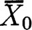 and whenever S and T are nets in X0 converging to x then f ∘ S and f ∘ T converge to the same point of Y.
(b) Let C be the set of points at which f is continuous and let f′ be the function on C whose value at a point x is the member y of the range space which is given by the definition of continuity at a point (more precisely, the graph of f′ is the intersection of C × Y with the closure of the graph of f). The function f′ has the property: If U is open in X, then f′[U] ⊂ f[U]–. The function f′ is continuous, provided Y has the property: The family of closed neighborhoods of each point of Y is a base for the neighborhood system of the point. (Such topological spaces are called regular. The requirement that Y be regular is essential here, as shown by Bourbaki and Dieudonné [1].)
EEXERCISE ON REAL-VALUED CONTINUOUS FUNCTIONS
Let f and g be real-valued functions on a topological space, let f and g be continuous with respect to the usual topology for the real numbers, and let a be a fixed real number.
(a) The function af, whose value at x is af(x), is continuous. (Show that the function which carries the real number r into ar is continuous, and use the fact that the composition of continuous functions is continuous.)
(b) The function |f|, whose value at x is |f(x) |, is continuous.
(c) If F(x) = (f(x), g(x)), then F is continuous relative to the usual topology for the Euclidean plane. (Verify that F followed by projection into a coordinate space is continuous.)
(d) The functions f + g, f – g, and f · g are continuous, and if g is never zero, then f/g is continuous. (First show that +, –, and · are continuous functions on the Euclidean plane to the space of real numbers. (See also 3.S.))
(e) The functions max [f,g] = [(f + g) +|f – g|]/2 and min [f,g] = [(f + g) – |f – g |]/2 are continuous.
FUPPER SEMI-CONTINUOUS FUNCTIONS
A real-valued function f on a topological space X is upper semi-continuous iff the set {x: f(x) ≧ a) is closed for each real number a. The upper topology for the set R of real numbers consists of the void set, R, and all sets of the form {t: t < a} for a in R. If {Sn, n ε D} is a net of real numbers, then lim sup {Sn: n ε D} is defined to be lim {sup {Sm: m ε D and m ≧ n}: n ε D} where this limit is taken relative to the usual topology for the real numbers.
(a) A net {Sn, n ε D} of real numbers converges to s relative to iff lim sup {Sn: n ε D} ≧ s.
(b) If f is a real-valued function on X, then f is upper semi-continuous iff f is continuous relative to the upper topology , and this is the case iff lim sup {f(xn): n ε D} ≦ f(x) whenever {xn, n ε D} is a net in X converging to a point x.
(c) If f and g are upper semi-continuous and t is a non-negative real number, then f + g and tf are upper semi-continuous.
(d) If F is a family of upper semi-continuous functions such that i(x) = inf {f(x): f ε F} exists for each x in X, then i is upper semi-continuous. (Observe that 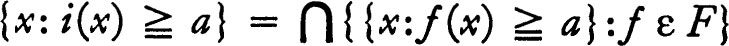.)
(e) If f is a bounded real-valued function on X, then there is a smallest upper semi-continuous function f– such that f– ≧ f. If 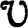 is the family of neighborhoods of a point x and Sv = sup {f(y): y ε V}, then 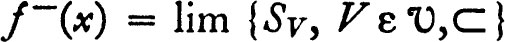.
(f) A real-valued function g is called lower semi-continuous iff –g is upper semi-continuous. If f is a bounded real-valued function, let f– = –(–f)– and let the oscillation of f, Qf, be defined by Qf(x) = f–(x) –f–(x) for x in X. Then Qf is upper semi-continuous, and f is continuous iff Qf(x) = 0 for all x in X.
(g) Let f be a non-negative real valued function on X, let R have the usual topology, and let G = {(x,t): 0 ≦ t ≦ f(x)} have the relativized product topology of X × R. Let be the decomposition of G into “vertical slices”; that is, sets of the form ({x} × R) ∩ G. If the decomposition is upper semi-continuous, then f is upper semi-continuous. (The converse is also true but the simplest proof requires theorem 5.12.)
GEXERCISE ON TOPOLOGICAL EQUIVALENCE
(a) Any two open intervals of real numbers, with the relativized usual topology for the reals, are homeomorphic.
(b) Any two closed intervals are homeomorphic, and any two half-open intervals are homeomorphic.
(c) No open interval is homeomorphic to a closed or half-open interval, and no closed interval is homeomorphic to a half-open interval.
(d) The subspace {(x,y) : x2 + y2 = 1} of the Euclidean plane is not homeomorphic to a subspace of the space of real numbers.
(Certain of the foregoing spaces have one or more points x such that the complement of {x} is connected.)
HHOMEOMORPHISMS AND ONE-TO-ONE CONTINUOUS MAPS
Given two topological spaces X and Y, a one-to-one continuous map of Y onto X and a one-to-one continuous map of X onto Y: then X and Y are not necessarily homeomorphic. (Let the space X consist of a countable number of disjoint half-open intervals and a countable number of isolated points (points x such that {x} is open). Let Y consist of a countable number of open intervals and a countable number of isolated points. Observe that a countable number of half-open intervals can be mapped in a one-to-one continuous way onto an open interval. I believe this example is due to R. H. Fox.)
ICONTINUITY IN EACH OF TWO VARIABLES
Let X and Y be topological spaces, X × Y the product space, and let f be a function on X × Y to another topological space. Then f(x,y) is continuous in x iff for each y the function f( ,y) whose value at x is f(x,y), is continuous. Similarly, f(x,y) is continuous in y iff for each x ε X, the function f(x, ) such that f(x, )(y) = f(x,y), is continuous. If f is continuous on the product space, then f(x,y) is continuous in x and in y, but the converse is false. (The classical example is the real-valued function f on the Euclidean plane such that f(x,y) = xy/(x2 + y2) and f(0,0) = 0.)
JEXERCISE ON EUCLIDEAN n-SPACE
A subset A of Euclidean n-space En is convex iff for every pair x and y of points of A and every real number t, such that 0 ≦ t ≦ 1, the point tx + (1 – t)y is a member of A. (We define (tx + (1 – t)y)i = txi + (1 – t)yi.) Then any two non-void open convex subsets of En are homeomorphic. What of closed convex subsets ?
KEXERCISE ON CLOSURE, INTERIOR AND BOUNDARY IN PRODUCTS
Let X and Y be topological spaces and let X × Y be the product space. For each set C let Cb be the boundary of C. Then, if A and B are subsets of X and Y respectively,
(a) (A × B)– = A– × B–
(b) (A × B)0 = A0 × B0, and
(c) (A × B)b = (A × B)– ~ (A × B)0 = ((Ab ∪ A0) × (Bb ∪ B0)) ~ (A0 × B0) = (Ab × Bb) ∪ (Ab × B0) ∪ (A0 × Bb) = (Ab × B–) ∪ (A– X Bb).
LEXERCISE ON PRODUCT SPACES
Suppose that, for each member a of an index set A, Xa is a topological space. Let B and C be disjoint subsets of A such that A = B ∪ C. Then the product space 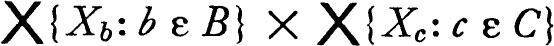 is homeomorphic to the product space 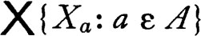. For each fixed topological space X the product XA is homeomorphic to XB × XC and (XB)C is homeomorphic to XB×C, all spaces being given the product topology.
MPRODUCT OF SPACES WITH COUNTABLE BASES
The product topology has a countable base iff the topology of each coordinate space has a countable base and all but a countable number of the coordinate spaces are indiscrete.
NEXAMPLE ON PRODUCTS AND SEPARABILITY
Let Q be the closed unit interval and let X be the product space QQ. Let A be the subset of X consisting of characteristic functions of points; more precisely, x ε A iff for some q in Q, x(q) = 1 and x is zero on Q ~ {q}.
(a) The space X is separable. (The set of all x in X with finite range (sometimes called step functions) are dense in X. There is also a countable subset of this set which is dense in X.)
(b) The set A, with the relative topology, is discrete and not separable.
(c) There is a single accumulation point x of A in X, and if U is a neighborhood of x, then A ~ U is finite.
OPRODUCT OF CONNECTED SPACES
The product of an arbitrary family of connected topological spaces is connected. (Fix a point x in the product, and let A be the set of all points y such that there is a connected subset to which both x and y belong. Show that A is dense.)
PEXERCISE ON T1-SPACES
The product of T1-spaces is a T1-space. If is a decomposition of a topological space, then the quotient space is T1 iff the members of are closed.
QEXERCISE ON QUOTIENT SPACES
The projection of a topological space X into the quotient space X/R is a closed map iff, for each subset A of X, R[A]– ⊂ R[A–]. The projection is open iff R[A0] ⊂ R[A]0 for each subset A. (– and 0 are the closure and interior respectively.)
REXAMPLE ON QUOTIENT SPACES AND DIAGONAL SEQUENCES
Let X be the Euclidean plane with the usual topology, let A be the set of all points (x,y) with y = 0, and let the decomposition consist of A and all sets {(x,y)} with 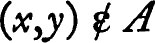. Then , with the quotient topology, has the following properties.
(a) The projection of X onto the quotient space is closed.
(b) There is a countable number of neighborhoods of A whose intersection is {A}.
(c) For each non-negative integer m the sequence {(m,1/(n + 1)), n ε ω] converges, in the quotient space, to A. If {Nn, n ε ω] is a subsequence of the sequence of non-negative integers, then the sequence {(n,1/(Nn+ 1)), n ε ω} does not converge to A. (The latter might be called a diagonal of the original family of sequences.)
(d) The quotient space does not satisfy the first axiom of countability.
Note This example is due to R. S. Novosad.
STOPOLOGICAL GROUPS
A triple 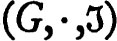 is a topological group iff (G,·) is a group, is a topological space, and the function whose value at a member (x,y) of G×G is x·y–1 is continuous relative to the product topology for G × G. When confusion is unlikely all mention of the group operation · and the topology is suppressed, and we say “G is a topological group.” If X and Y are subsets of G, then X · Y is the set of all points z of G such that z = x·y for some x in X and some y in Y. If x is a point of G we abbreviate {x}·Y and Y· {x} to x·Y and Y·x respectively, and Y–1 is defined to be {x: x–1 ε Y).
(a) If X, Y, and Z are subsets of G, then (X·Y)·Z = X·(Y·Z) and (X·Y)–1 = Y–1·X–1.
(b) Let (G,·) be a group and a topology for G. Then 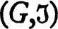 is a topological group iff for each x and y in G and each neighborhood W of x·y–1 there are neighborhoods U of x and V of y such that U· V–1 ⊂ W. Equivalently, is a topological group iff i and m are continuous, where i(x) = x–1 and m(x,y) = x·y.
(c) If G is a topological group, then i, where i(x) = x–1, is a homeomorphism of G onto G. For each a in G both La and Ra (called the left and right translations by a) are homeomorphisms, where La(x) = a·x and Ra(x) = x·a.
It is very important to notice that the topology of a topological group is determined by the neighborhood system of a member of the group. This fact (precisely stated below) permits the “localization” of many notions.
(d) If G is a topological group and is the neighborhood system of the identity, then a subset A of G is open iff 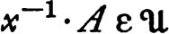 for each x in A or equivalently if 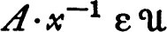 for each x in A. The closure of the subset A is 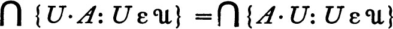. (Notice that x ε U·A iff (U–1·x) ∩ A is not void.)
(e) The family of neighborhoods of the identity e of a topological group has the properties:
(i) |
if U and V belong to , then 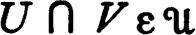; |
(ii) |
if 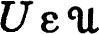 and U ⊂ V, then 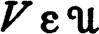; |
(iii) |
if , then for some , V·V–1 ⊂ U; and |
(iv) |
for each U in and each x in G, 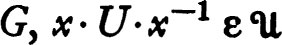. |
On the other hand, given a group G and a non-void family of non-void subsets satisfying these four propositions there is a unique topology for G such that is a topological group and is the neighborhood system of the identity element.
(f) Every group, with the discrete topology or with the indiscrete topology, is a topological group If G is the set of real numbers, then (G,+,), where is the usual topology, is a topological group and (G ~ {0},·,) is also a topological group. If G is the set of all integers, p is a prime and is the family of all subsets U of G such that for some positive integer k every integral multiple of pk belongs to U, then is the neighborhood system of 0 relative to a topology such that (G,+,) is a topological group.
(g) A topological group is a Hausdorff space whenever it is T0-space. (That is, if x and y are distinct elements there is either a neighborhood of x to which y does not belong or the reverse. Observe that if 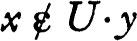, then 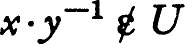, and if V–1· V ⊂ U, then V·x ∩ V·y is void.)
(h) If U is open and X is an arbitrary subset of a topological group, then U·X and X·U are open. However, both X and Y may be closed subsets and X·Y may fail to be closed. (Consider the Euclidean plane with the usual addition with X = Y = {(x,y):y = 1/x2}.)
(i) A cartesian product 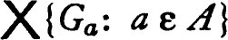 of groups is a group under the operation: (x·y)a = xa·ya for each a in A. The product, with the product topology, is a topological group and the projection into each coordinate space is a continuous open homomorphism.*
Note Bourbaki [1], Pontrjagin [1], and Weil [2] are standard references on topological groups; see also Chevalley [1].
TSUBGROUPS OF A TOPOLOGICAL GROUP
(a) A subgroup of a topological group is, with the relative topology, a topological group.
(b) The closure of a subgroup is a subgroup and the closure of an invariant subgroup is invariant (invariant = normal = distinguished).
(c) Every subgroup with non-void interior is open and closed. A subgroup H is either closed or H– ~ H is dense in H–.
(d) The smallest subgroup which contains a fixed open subset of a topological group is both open and closed.
(e) The component of the identity in a topological group is an invariant subgroup.
(f) A discrete (with the relative topology) normal subgroup of a connected topological group is a subset of the center. (For a fixed member h of the subgroup H consider the map of G into H which carries x into x–1·h·x.)
UFACTOR GROUPS AND HOMOMORPHISMS
Let G be a topological group, H a subgroup, G/H the family of left cosets (sets of the form x·H for some x in G). Then G/H with the quotient topology is a homogeneous space. If H is an invariant subgroup, then G/H is a group, called the factor group or quotient group.
(a) The projection of a topological group G onto the homogeneous quotient space G/H is open and continuous. (Show that the union of all left cosets which intersect an open set U is U·H and apply 3.10.)
(b) If H is an invariant subgroup, then G/H, with the quotient topology, is a topological group and the projection is a continuous, open homomorphism.
(c) The map of the homogeneous space which carries an element A into a·A, where a is a fixed member of G, is a homeomorphism.
(d) If f is a homomorphism of a topological group G into another group H, then f is continuous iff the inverse of a neighborhood of the identity element of H is a neighborhood of the identity of G.
(e) If f is a continuous homomorphism of the topological group G into a topological group J, then the map of G onto f[G], where f[G] has the quotient topology, is a continuous open homomorphism, and the identity map of f[G], with the quotient topology, into J is continuous. Hence each continuous homomorphism may be “factored” into a continuous open homomorphism followed by a continuous one-to-one homomorphism. If f is a continuous open homomorphism of G onto f, then J is topologically isomorphic to G/K where K is the kernel of f.
(f) If J ⊂ H ⊂ G and J and H are invariant subgroups of G, then H/J is a subgroup of G/J, the quotient topology for H/J is the relative quotient topology for G/J, and the map of G/J into G/H which carries A into A·H is continuous and open, and hence (G/J)/(H/J) is topologically isomorphic to G/H.
VBOX SPACES
A base for the box topology for the cartesian product 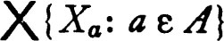 is the family of all sets where Ua is open in Xa for each a in A. Hence the cartesian product of open sets is open relative to the box topology.
(a) Projection into each coordinate space is, relative to the box topology, continuous and open.
(b) Let Y be the cartesian product of the real numbers an infinite number of times; that is, Y = RA, where R is the set of real numbers and A is an infinite set. With the box topology Y does not satisfy the first countability axiom, and the component of Y to which a point y belongs is the set of all points x such that {a: xa ≠ ya} is finite. (Let x and y be points of Y whose coordinates differ for an infinite set a0, a1 ···, ap ··· of members of A. Let Z be the set of all z in Y such that for some k, p| z(ap) – x(ap) |/| x(ap) – y(ap) | < k for all p. Then Z is open and closed, x ε Z and .)
(c) Prove the results of (b) for the product of an infinite number of connected, Hausdorff topological groups, each of which contains at least two points. Show first that the product of topological groups is, with the box topology, a topological group.
WFUNCTIONALS ON REAL LINEAR SPACES
Let (X,+,·) be a real linear space. A real-valued linear function on X is called a linear functional. The set Z of all linear functionals on X is, with the natural definition of addition and scalar multiplication, a real linear space. It is clear that Z is a subset of the product , where R is the set of real numbers. The relativized product topology for Z is called the weak* or w*-topology (the simple topology). (The space Z is a subgroup of RX, which is a topological group according to 3.S(i); however, the following results do not require the propositions on topological groups.)
The following propositions characterize w*-dense subspaces of Z and w*-continuous linear functionals.
(a) If f, g1, …, gn are members of Z and f(x) = 0 whenever gi(x) = 0 for each i, then there are real numbers a1, …, an such that f = ∑{aigi: i = 1, …, n}. (Consider the map G of X into En defined by (G(x))i = gi(x). Show that there is an induced map F (see chapter 0) such that f = F ∘ G.)
(b) Density lemma Let Y be a linear subspace of Z such that for each non-zero member x of X there is g in Y such that g(x) ≠ 0. Then Y is w*-dense in Z. (To show that f ε Y– it is necessary to prove that for each finite subset x1, …, xn of X there is a member of Y which approximates f at each of x1, …, xn. Show there is g in Y such that g(xi) = f(xi) for each i, i = 1, …, n.)
(c) Evaluation theorem A linear functional F on Z is w*-continuous iff it is an evaluation; that is, iff for some x in X it is true that F(g) = g(x) for all g in Z. (If F is w*-continuous, then for some x1, …, xn in X and some positive real numbers r1, …, rn it is true that | F(g) | < 1 whenever | g(xi) | < ri for each i. Show that, if g(xi) = 0 for each i, then F(g) = 0.)
Notes The concept of the product topology grew out of the study of sequential convergence relative to the w*-topology. The latter has been studied extensively (see, for example, Banach [1]). There were several awkward situations which arose in this study, which have been somewhat clarified by further topological developments. One might define the sequential closure of a set to be the union of the set and all limit points of sequences in the set, and agree that a set is sequentially closed iff it is identical with its sequential closure. Then it is not hard to see that a set may be sequentially closed relative to the w*-topology but may fail to be w*-closed. This is not a serious criticism if sequential convergence is the object under study. However, the really damaging fact is that the sequential closure of a set may fail to be sequentially closed; that is, sequential closure is not a Kuratowski closure operator. Because of this the machinery of general topology does not apply to the sequential closure operator, and ad hoc arguments are necessary for each conclusion. See Banach [1; 208 ff] for further discussion and examples.
XREAL LINEAR TOPOLOGICAL SPACES
A real linear topological space (r.l.t.s) is a quadruple (X,+,·,) such that (X, +, ·) is a real linear space, (X,+,) is a topological group, and the scalar multiplication, ·, is a continuous function on X × (real numbers) to X. Recall that a subset K of a real linear space is convex iff, whenever 0 ≦ t ≦ 1 and x and y are members of K, then t·x + (1 – t)·y ε K.
(a) The function which, for a fixed real number a, a ≠ 0, carries each member x of a real linear topological space into a·x is a homeomorphism.
(b) The cartesian product of real linear topological spaces is, with addition and scalar multiplication defined coordinate-wise, and with the product topology, a r.l.t.s.
(c) If Y is a linear subspace of the r.l.t.s. X, then Y, with the relative topology, is a r.l.t.s., and X/Y, with the quotient topology, is a r.l.t.s.
(d) Let K be a convex subset of a r.l.t.s. X and f a linear functional on X. Then f is continuous on K iff, for each real number t, the set f–1[t] ∩ K is closed in K. (If {xn, n ε D} is a net in K, converging to a member x of K such that {f(xn), n ε D} fails to converge to f(x), choose for n in a cofinal subset of D a point yn on the segment from xn to x such that f(yn) is a constant different from f(x).)
(e) If f is a real-valued linear function (that is, a linear functional) on a r.l.t.s. X, then f is continuous iff {x: f(x) = 0} is closed.
Notes The concept of a linear topological space is relatively recent (Kolmogoroff [1] and v. Neumann [1]); it is a notion which grew out of the study of the weak and weak* topologies for a Banach space and its adjoint. Much of the elementary theory of linear topological spaces is a direct application of the theory of topological groups; the results which distinguish the theory from that of topological groups all depend on convexity arguments. (This is a perfectly normal state of affairs; the chief use of the scalar multiplication, which is the only distinguishing feature, is in convexity arguments.) The few results on r.l.t. spaces which occur in the problems of this book do not constitute an adequate introduction to the theory because we do not list the propositions on convexity which are essential to a serious study. The following are suggested as reading references: Bourbaki [3], Nachbin [1], and Nakano [1]. The first of these contains a study of linear topological spaces over a topologized (not necessarily commutative) field.
* If f is defined on a subset A of a topological space, then continuity at points of the closure A– may also be defined (see 3.D); several useful propositions result.
* A topologist is a man who doesn’t know the difference between a doughnut and a coffee cup.
* This description of the product topology is due to N. Bourbaki.
* Some authors use the term “representation” to mean continuous homomorphism, and the term “homomorphism” to mean a continuous homomorphism which is an open map onto its range.